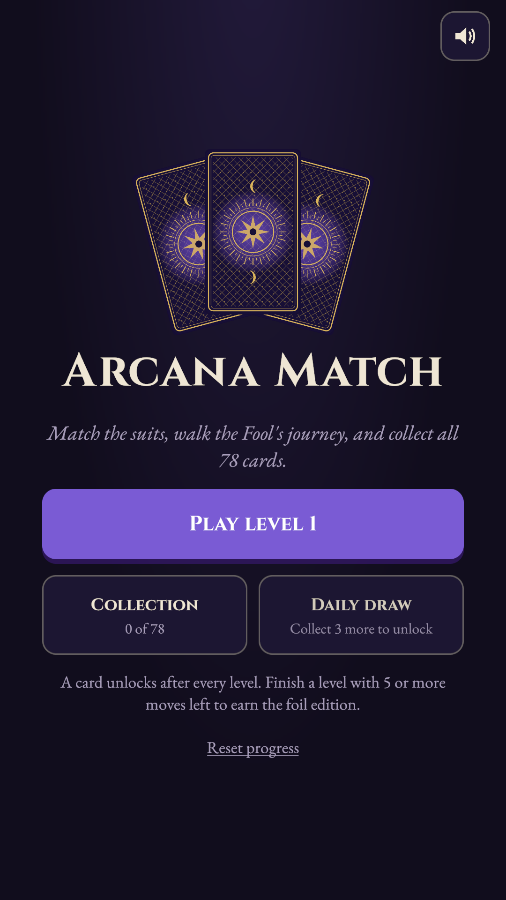
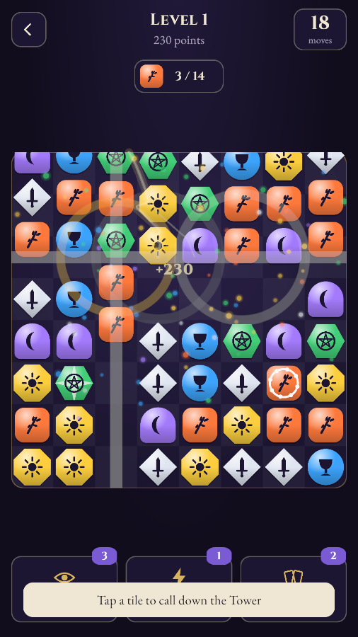
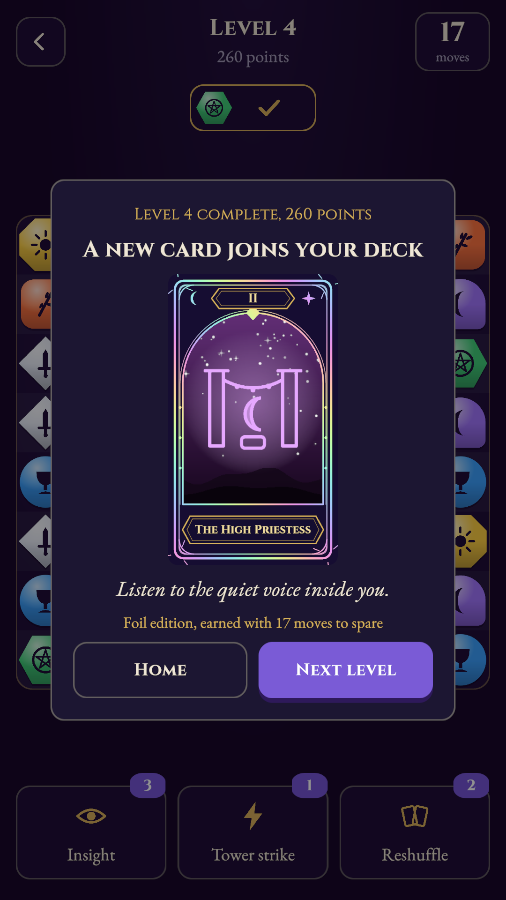

Umut Eren Demirci
Readable systems, tuned with data. I design difficulty curves, progression and systems players can read at a glance, and I test them with data.
See Arcana MatchDownload CV
Arcana Match
A calm, tarot-themed match-3 for phones. Every level you win adds a card to your deck; win with moves to spare and it's foil. Once you own three cards, you can draw one of your own each day.
I designed the board, five chaining special tiles, three boosters, a formula-driven level curve and a 78-card collection meta, then balanced it with a bot that plays the real rules.
One-pagerGDD (18 pages)FlowchartsBalance workbookCard catalogue
Built with an AI coding assistant (Claude). I designed the game, set the rules and tuning, ran the balance simulations and play-tested every build phase.



The Chronicles of Demise
A narrative RPG concept set in worlds whose rules come from their stories. My prototype asks: can the player feel a character's emotions through movement alone?
Trigger zones switch the character between Neutral, Anxious and Determined. Each state changes walk speed (500 / 150 / 800), braking and the world's colour, so anxiety feels heavy and hesitant before any text appears.

From classrooms to game design
Before games I spent twelve years teaching English and designing courses. That job was mostly about difficulty curves: introduce one skill at a time, watch where people struggle, adjust the pace. I studied linguistics and English literature at Ankara University, and since 2013 I have been writing The Chronicles of Demise, a fantasy novel series I am now adapting into a game. I'm looking for game design roles in systems, levels or content, especially in mobile and hybrid-casual games.